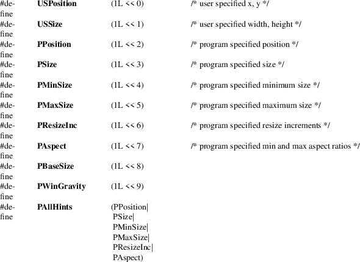

XAllocSizeHints, XSetWMNormalHints, XGetWMNormalHints, XSetWMSizeHints, XGetWMSizeHints, XSizeHints − allocate size hints structure and set or read a window’s WM_NORMAL_HINTS property
|
XSizeHints *XAllocSizeHints(void); | |
|
void XSetWMNormalHints(Display *display, Window w, XSizeHints *hints); | |
|
Status XGetWMNormalHints(Display *display, Window w, XSizeHints *hints_return, long *supplied_return); | |
|
void XSetWMSizeHints(Display *display, Window w, XSizeHints *hints, Atom property); | |
|
Status XGetWMSizeHints(Display *display, Window w, XSizeHints *hints_return, long *supplied_return, Atom property); |
|
display |
Specifies the connection to the X server. | ||
|
hints |
Specifies the size hints for the window in its normal state. | ||
|
hints |
Specifies the XSizeHints structure to be used. |
hints_return
Returns the size hints for the window in its normal state.
|
property |
Specifies the property name. |
supplied_return
Returns the hints that were supplied by the user.
|
w |
Specifies the window. |
The XAllocSizeHints function allocates and returns a pointer to a XSizeHints structure. Note that all fields in the XSizeHints structure are initially set to zero. If insufficient memory is available, XAllocSizeHints returns NULL. To free the memory allocated to this structure, use XFree.
The XSetWMNormalHints function replaces the size hints for the WM_NORMAL_HINTS property on the specified window. If the property does not already exist, XSetWMNormalHints sets the size hints for the WM_NORMAL_HINTS property on the specified window. The property is stored with a type of WM_SIZE_HINTS and a format of 32.
XSetWMNormalHints can generate BadAlloc and BadWindow errors.
The XGetWMNormalHints function returns the size hints stored in the WM_NORMAL_HINTS property on the specified window. If the property is of type WM_SIZE_HINTS, is of format 32, and is long enough to contain either an old (pre-ICCCM) or new size hints structure, XGetWMNormalHints sets the various fields of the XSizeHints structure, sets the supplied_return argument to the list of fields that were supplied by the user (whether or not they contained defined values), and returns a nonzero status. Otherwise, it returns a zero status.
If XGetWMNormalHints returns successfully and a pre-ICCCM size hints property is read, the supplied_return argument will contain the following bits:
(USPosition|USSize|PPosition|PSize|PMinSize|
PMaxSize|PResizeInc|PAspect)
If the property is large enough to contain the base size and window gravity fields as well, the supplied_return argument will also contain the following bits:
PBaseSize|PWinGravity
XGetWMNormalHints can generate a PN BadWindow error.
The XSetWMSizeHints function replaces the size hints for the specified property on the named window. If the specified property does not already exist, XSetWMSizeHints sets the size hints for the specified property on the named window. The property is stored with a type of WM_SIZE_HINTS and a format of 32. To set a window’s normal size hints, you can use the XSetWMNormalHints function.
XSetWMSizeHints can generate BadAlloc, BadAtom, and BadWindow errors.
The XGetWMSizeHints function returns the size hints stored in the specified property on the named window. If the property is of type WM_SIZE_HINTS, is of format 32, and is long enough to contain either an old (pre-ICCCM) or new size hints structure, XGetWMSizeHints sets the various fields of the XSizeHints structure, sets the supplied_return argument to the list of fields that were supplied by the user (whether or not they contained defined values), and returns a nonzero status. Otherwise, it returns a zero status. To get a window’s normal size hints, you can use the XGetWMNormalHints function.
If XGetWMSizeHints returns successfully and a pre-ICCCM size hints property is read, the supplied_return argument will contain the following bits:
(USPosition|USSize|PPosition|PSize|PMinSize|
PMaxSize|PResizeInc|PAspect)
If the property is large enough to contain the base size and window gravity fields as well, the supplied_return argument will also contain the following bits:
PBaseSize|PWinGravity
XGetWMSizeHints can generate BadAtom and BadWindow errors.
WM_NORMAL_HINTS
Size hints for a window in its normal state. The C type of this property is XSizeHints.
The XSizeHints structure contains:
/* Size hints mask bits */

/* Values */
typedef struct
{
long flags; /* marks which fields in this structure are
defined */
int x, y; /* Obsolete */
int width, height; /* Obsolete */
int min_width, min_height;
int max_width, max_height;
int width_inc, height_inc;
struct {
int x; /* numerator */
int y; /* denominator */
} min_aspect, max_aspect;
int base_width, base_height;
int win_gravity;
/* this structure may be extended in the future */
} XSizeHints;
The x, y, width, and height members are now obsolete and are left solely for compatibility reasons. The min_width and min_height members specify the minimum window size that still allows the application to be useful. The max_width and max_height members specify the maximum window size. The width_inc and height_inc members define an arithmetic progression of sizes (minimum to maximum) into which the window prefers to be resized. The min_aspect and max_aspect members are expressed as ratios of x and y, and they allow an application to specify the range of aspect ratios it prefers. The base_width and base_height members define the desired size of the window. The window manager will interpret the position of the window and its border width to position the point of the outer rectangle of the overall window specified by the win_gravity member. The outer rectangle of the window includes any borders or decorations supplied by the window manager. In other words, if the window manager decides to place the window where the client asked, the position on the parent window’s border named by the win_gravity will be placed where the client window would have been placed in the absence of a window manager.
Note that use of the PAllHints macro is highly discouraged.
|
BadAlloc |
The server failed to allocate the requested resource or server memory. | ||
|
BadAtom |
A value for an Atom argument does not name a defined Atom. | ||
|
BadWindow |
A value for a Window argument does not name a defined Window. |
XAllocClassHint(3),
XAllocIconSize(3), XAllocWMHints(3), XFree(3),
XSetCommand(3), XSetTransientForHint(3),
XSetTextProperty(3), XSetWMClientMachine(3),
XSetWMColormapWindows(3), XSetWMIconName(3), XSetWMName(3),
XSetWMProperties(3), XSetWMProtocols(3),
XStringListToTextProperty(3)
Xlib − C Language X Interface, O’Reilly and
Associates,